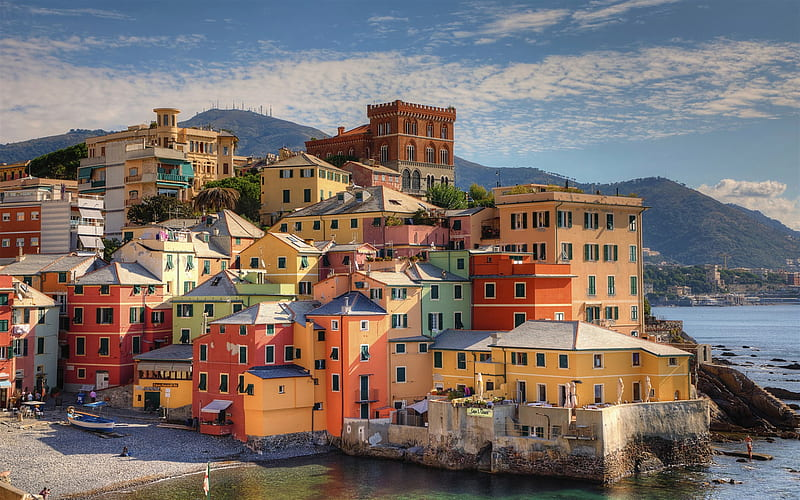
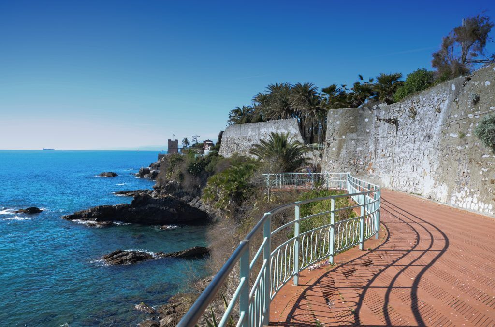

LUOGHI CARATTERISTICI
Visita i luoghi più belli che ti faranno innamorare di questa città

BOCCADASSE
Uno dei sobborghi più amati dai genovesi

PASSEGGIATA DI NERVI
Una splendida passeggiata in riva al mare

CENTRO STORICO
Il centro storico più grande d'Europa